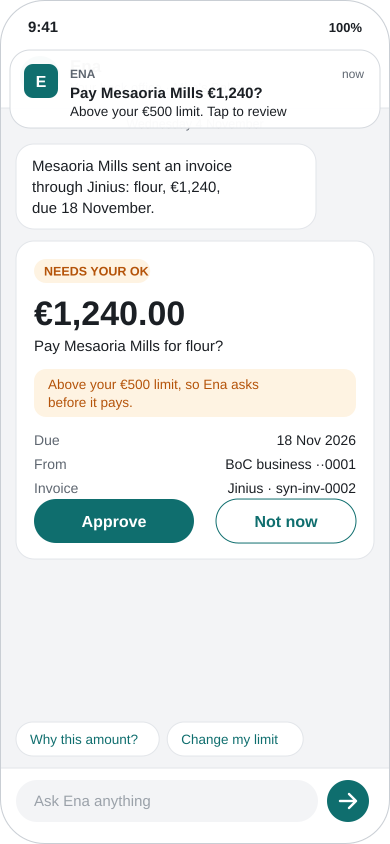
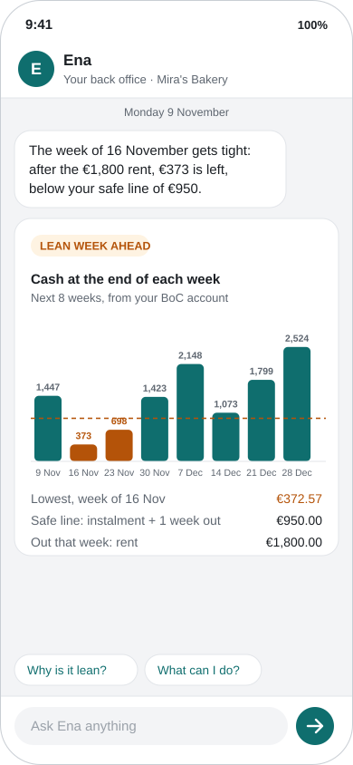
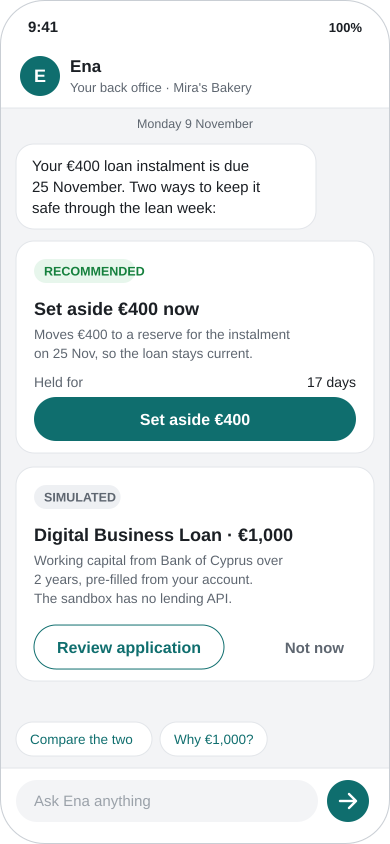
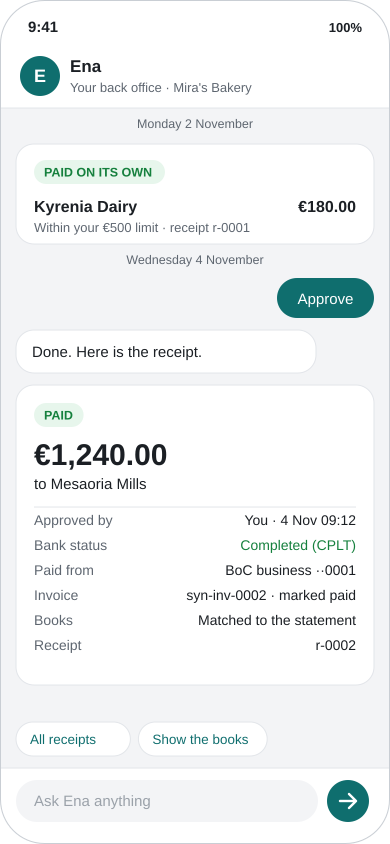

BOC FINTECH HACKATHON 7.0
“Pay the flour supplier €1,240?”
It’s above her €500 limit, so Ena asks. This is the only thing a bakery owner did today. Ena did the rest.
Ena
One agent for your whole back office

Speaker notes. Open on the phone. “Pay the flour supplier €1,240? It’s above her €500 limit.” Pause. “This is the only thing a bakery owner did today. Ena did the rest.” Ena means “one” in Greek: one agent for the whole back office. We close on this same card, when she taps Approve and the receipt appears. The amounts come from our synthetic bakery month; swap them for the interview numbers if they differ.
THE PROBLEM
A bakery has no back office. The owner is the back office.
Invoices
Paid one by one from a phone, between customers
Books
Done at night, or paid to an accountant: [€__] a month
Cash
Found short when a payment bounces, not weeks before
Their time
[__] hours a month on paperwork, by the owners we interviewed
3.6%
of loans to small and medium businesses in Cyprus are non-performing: more than twice the 1.6% of the whole sector.
Most of them didn’t fail. They ran out of cash for a month.
Central Bank of Cyprus, 2026 [check the month]
Speaker notes. The owners we talked to: [name the businesses: a bakery, a photo studio, a barber]. One quote here if we have a good one: [“…”]. Fill the two bracketed numbers from the interviews (questions 2 and 4): what the books cost and the hours a month. Then the bank’s number: 3.6% against 1.6%. Check the Central Bank figure and its month before going on stage.
HOW ENA WORKS
One loop on the owner’s Bank of Cyprus account
1
Pays supplier invoices
Reads them from Jinius, pays from the account through bocAPI
2
Keeps the books
Matches the bocAPI statement to invoices and JCC card sales
3
Forecasts cash
Eight weeks ahead, and flags the first lean week
4
Offers credit early
Sets money aside for the loan instalment, or pre-fills a Digital Business Loan (simulated: the sandbox has no lending API)
The gate: the owner sets the limit
Below it Ena pays on its own. Above it Ena asks. Every action leaves a receipt.


Speaker notes. Four steps, three real APIs: Jinius for supplier invoices, bocAPI for payments, balance and statement, JCC for card sales. The loan offer is simulated, and we say so. What sets us apart from the cash-flow coaches: Ena acts. It pays, inside a limit the owner sets, and leaves a receipt for every action. Those are the organisers’ own guardrails: spending limits, human review, log everything. Code decides every amount; the AI explains and asks.
THE ONE NUMBER
The owner’s time on the back office
Before, as owners told us
[__] h
a month on invoices, books and payments
With Ena
~6 min
a month, set-up included. She stepped in twice: the flour invoice and the reserve

Speaker notes. This is where the live demo goes: replay the bakery’s November in about a minute. The €180 dairy invoice is paid on its own. The €1,240 flour invoice asks; tap Approve; the receipt appears. The forecast flags the week of 16 November; she sets €400 aside for the instalment. Then the number: [__] hours a month before, from the interviews, against about 6 minutes with Ena. Say plainly that before is self-reported and after is modelled.
BUSINESS MODEL AND NEXT STEP
Good for the owner, good for the bank
WHO PAYS
The owner, or the bank
- A monthly subscription below the [€__] of back office it replaces
- Or a feature of a premium BoC business account
- Interviews: owners would pay [€__] a month
WHAT BOC GAINS
Loans paid on time
- Instalments set aside before a lean month
- Digital Business Loans offered in the week they’re needed
- Payments and deposits stay at BoC
THE NEXT STEP
A pilot with BoC
- [__] business customers in one vertical, for three months
- A standing payment mandate within the owner’s limit
- Measure: owner hours and missed instalments
Speaker notes. Who pays is still open: a subscription from the owner, or the bank bundling Ena into its business account. Lead with what the bank gains, since the jury is mostly Bank of Cyprus: fewer missed instalments, loans sold at the moment of need, payments that stay at BoC. The ask: a pilot with a handful of BoC business customers in one vertical. Then go back to the approval card: she taps Approve, the receipt appears. “Ena: one agent for your whole back office.” Fill the bracketed numbers from the interviews and agree the pilot size.